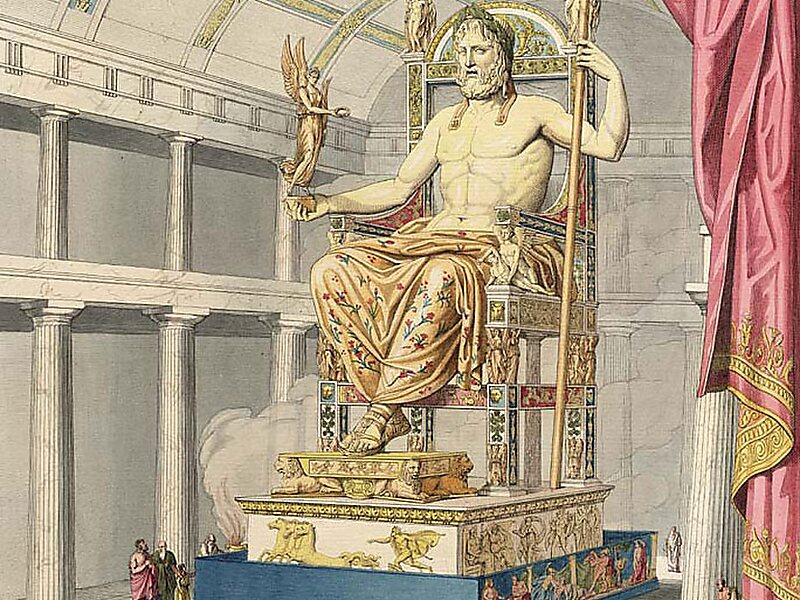
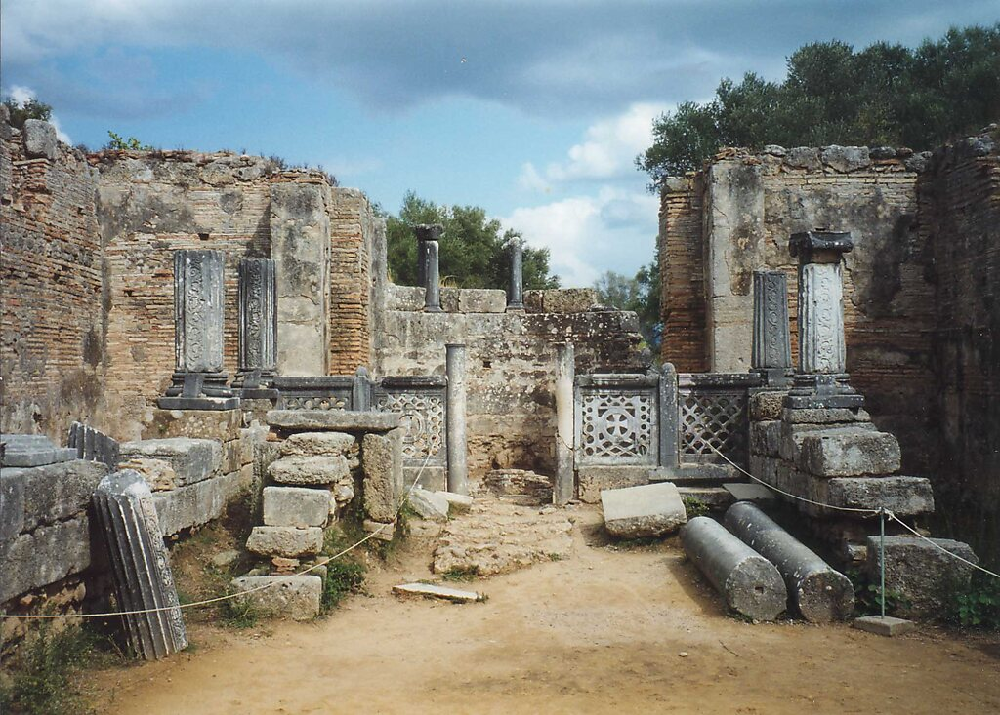

Rzeźba przedstawiała siedzącego na tronie Zeusa o poważnym i dostojnym obliczu. Na głowie miał wieniec z gałązek oliwnych, z lewego ramienia zwisał mu złoty płaszcz, w prawej dłoni trzymał statuę bogini Nike, a lewą rękę wspierał na wykładanym szlachetnymi kamieniami berle. Na rzeźbionych oparciach i nogach tronu ukazano postaci bóstw i sceny bitewne. Szatę i włosy Zeusa wykonano ze złota, obnażone części ciała z kości słoniowej, tron z drewna cedrowego wykładanego hebanem i szlachetnymi kamieniami.
Rzeźba stała w świątyni w Olimpii przez ok. 800 lat. Po wprowadzeniu zakazu igrzysk olimpijskich posąg został wywieziony do Konstantynopola ok. 420 roku, gdzie przepadł w pożarze w roku 475.
Jedyne przedstawienia posągu, które zachowały się do XXI w. to rewersy monet z Elidy. Rzeźba nie doczekała się kopii.
Zachowało się jednak wiele opisów literackich, m.in. Strabona z I w. n.e., Kallimacha z Cyreny z III w. p.n.e. i Pauzaniasza, który odwiedził Olimpię ok. 160 roku n.e.
Z opisu Kallimacha wynika, że rzeźba miała trochę ponad 13 metrów wysokości, co czyniło ją wyższą od posągu Ateny Promachos w Atenach wysokiego na mniej niż 13 m. Wysokość rzeźby dyktowało wnętrze świątyni, które Fidiasz doskonale wykorzystał, by spotęgować wrażenie monumentalności rzeźby. Na podłodze celli, przed posągiem, z polecenia Fidiasza, umieszczono basen (6,5 m²) wyłożony ciemnym wapieniem i wypełniony oliwą, w którym odbijała się rzeźba. Strabon natomiast zauważył, że „gdyby Zeus wstał, to by przebił dach”.

Wyobrażenie pomniku

Tak wyglądają teraz ruiny świątyni, w której stał pomnik